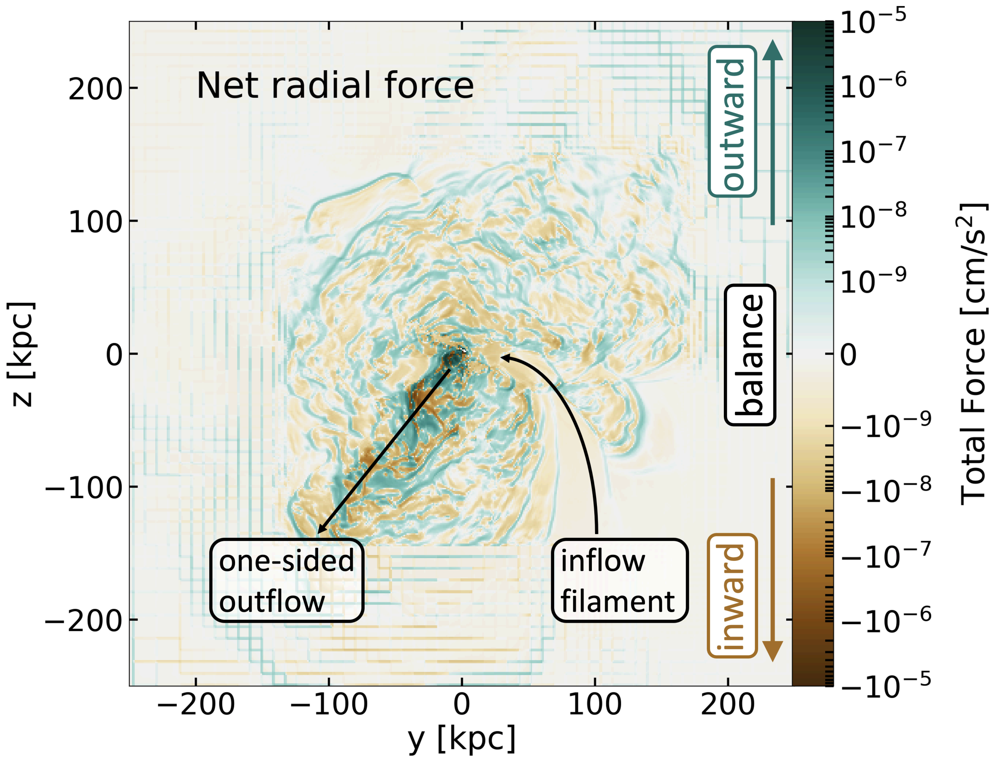
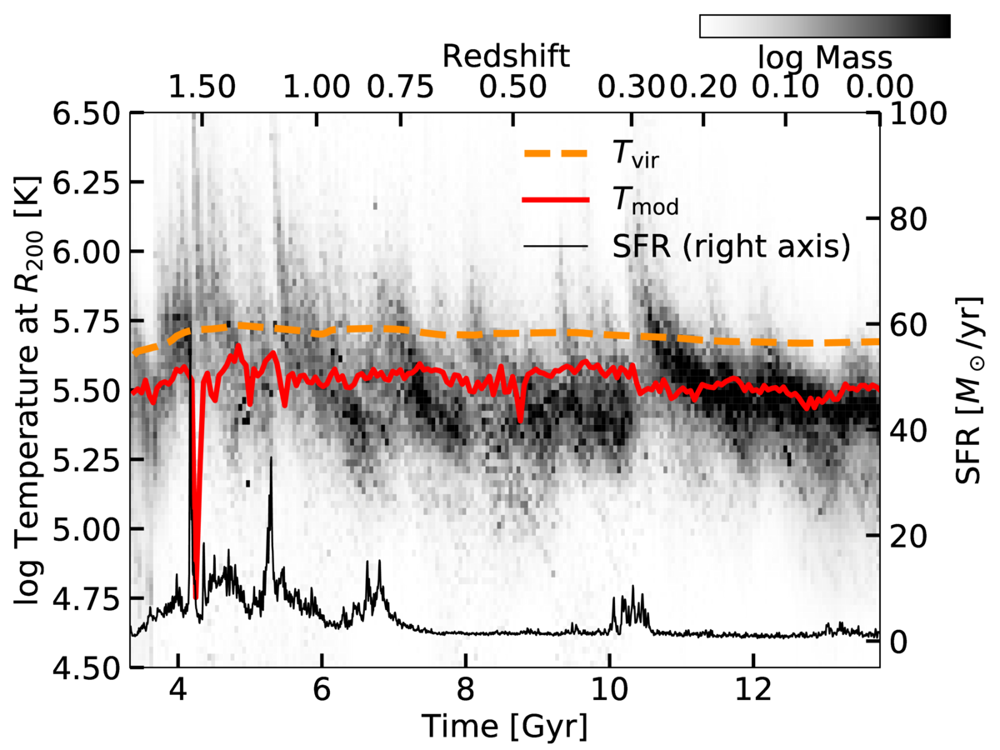
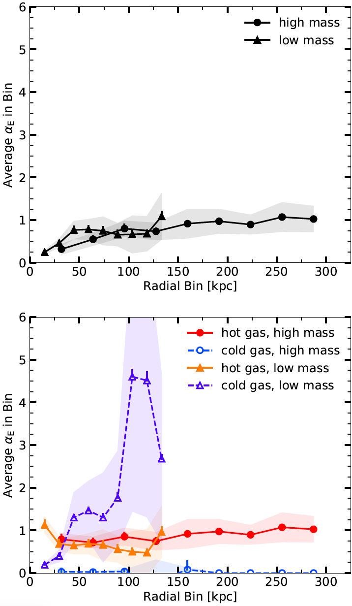

Non-Equilibrium CGM
What common analytic models accurately describe the simulated CGM?
As part of a Hubble Space Telescope Archive Research Theory grant (#16140, PI Lochhaas), we investigated the degree of hydrostatic equilibrium in the CGM of L* galaxy halos using the FOGGIE simulations discussed above in "Figuring Out Gas & Galaxies in Enzo VI: The Circumgalactic Medium of L* Galaxies is Supported in an Emergent, Non-Hydrostatic Equilibrium" (here). I developed a new way to visualize the contribution of different types of pressures and gas motions to support against gravity: quantifying the forces acting on the CGM gas (i.e. pressure gradients) rather than simply examining pressures. This allowed me to include rotational support, which has no associated pressure, into the full force balance of all physical processes supporting gas in the CGM, which also includes thermal pressure, turbulent pressure, and ram pressure. We found that approximate hydrostatic equilibrium, where the thermal pressure of gas supports it against gravity, only holds in the outskirts of the CGM and only at low redshift. In the inner CGM, turbulent pressure and rotational support are just as important to supporting the CGM gas against gravity as the thermal pressure. Importantly, we found that the force acting on CGM gas varies significantly on scales of ~3-5 kpc! This means that a given parcel of CGM gas cannot be said to be in any state of equilibrium, not hydrostatic nor an equilibrium that includes forces from dynamic gas motions. The below image shows a slice through the CGM of one of the FOGGIE galaxies at z = 0, color-coded by the net force (sum of thermal, turbulent, ram pressure, rotation, and gravity) acting on the CGM gas.
In "Figuring Out Gas & Galaxies In Enzo (FOGGIE) V: The Virial Temperature Does Not Describe Gas in a Virialized Galaxy Halo" (here), we used the FOGGIE simulations discussed above to show that the gas in the outskirts of a L* galaxy halo is a factor of two cooler than the standard assumed virial temperature, which is commonly used to interpret observations of the CGM. The virial temperature assumes a balance between potential and kinetic energies of the halo gas (i.e., that the halo is "virialized"), and also assumes that the kinetic energy is purely thermal. An energy budget accounting of the gas in the outskirts of the halo shows that there are roughly equal amounts of thermal and non-thermal kinetic energy, proving the assumption behind the standard virial temperature faulty. We derived a new, modified virial temperature that accounts for the non-thermal gas motions in the energy balance (while still showing that the halo is, in fact, virialized) and showed it matches the temperature of the bulk of halo gas better than the standard assumed virial temperature. The figure shows a histogram of temperature (more mass in darker regions) over time as the halo evolves for one of the FOGGIE galaxies, with the standard virial temperature (orange dashed line) overestimating the temperature of most of the gas mass, especially near z=0, and the modified virial temperature (red solid line) better matching the simulated temperature. This points to a shift in the way we should be thinking about the CGM: the halo is not simply filled with a static, hot halo at the virial temperature, but instead has a significant amount of gas dynamic motions and non-thermal kinetic energy that drive the overall structure and balance of the halo gas. A factor of two cooler CGM than expected has some important observational implications: the primary ions will be observed in UV rather than X-ray, and there may be higher cool gas production than expected, explaining the abundance of cool gas observed. In addition, the mass of hot gas in the CGM is frequently estimated by extrapolating X-ray surface brightness profiles to the virial radius, but this study shows that the CGM does not maintain its high temperature in the outskirts of the CGM and thus the mass of hot gas inferred may be incorrect.
Another of my recent papers, "Properties of the Simulated Circumgalactic Medium" (which can be found here) uses the idealized CGM simulations of Fielding et al. (2017) to determine the overall properties of the simulated CGM. These simulations, despite being idealized and spherically-symmetric, are high-resolution and allow us to probe physical processes without the additional complications of a fully cosmological model. Using these simulations, we showed how the CGM is dominated by its gas motions -- bulk galactic outflows and inflows, as well as the turbulence they induce. By considering the impact these motions have on the support of the CGM gas against gravity, we found that a 1012 solar mass dark matter halo is in dynamical pressure equilibrium, as expected from traditional models of galaxy formation, but a lower-mass 1011 solar mass dark matter halo is not in equilibrium at all (see figure below). This suggests that the kinematic properties of CGM gas are important to understanding the overall structure in the CGM, especially for low-mass galaxies, but even for high-mass galaxies where we might expect the standard paradigm of galaxy formation theory to hold, too. This project began at the Kavli Summer Program in Astrophysics the summer of 2018, which took place at the Center for Computational Astrophysics at the Flatiron Institute and where I had the opportunity to work with Professor Greg L. Bryan of Columbia University and the CCA. A video of my presentation as part of this program can be found here.
The above plots show the "equilibrium parameter", which is a measure of how close to equilibrium the CGM is, as a function of galactocentric radius in two idealized simulations of two different mass dark matter halos. The high-mass halo, especially the hot gas, is in equilibrium, while the cold gas is not. The low-mass halo is not in equilibrium anywhere and is dominated by the bulk flows of both its warm and cold gas. Figure is from Lochhaas et al. (2020).